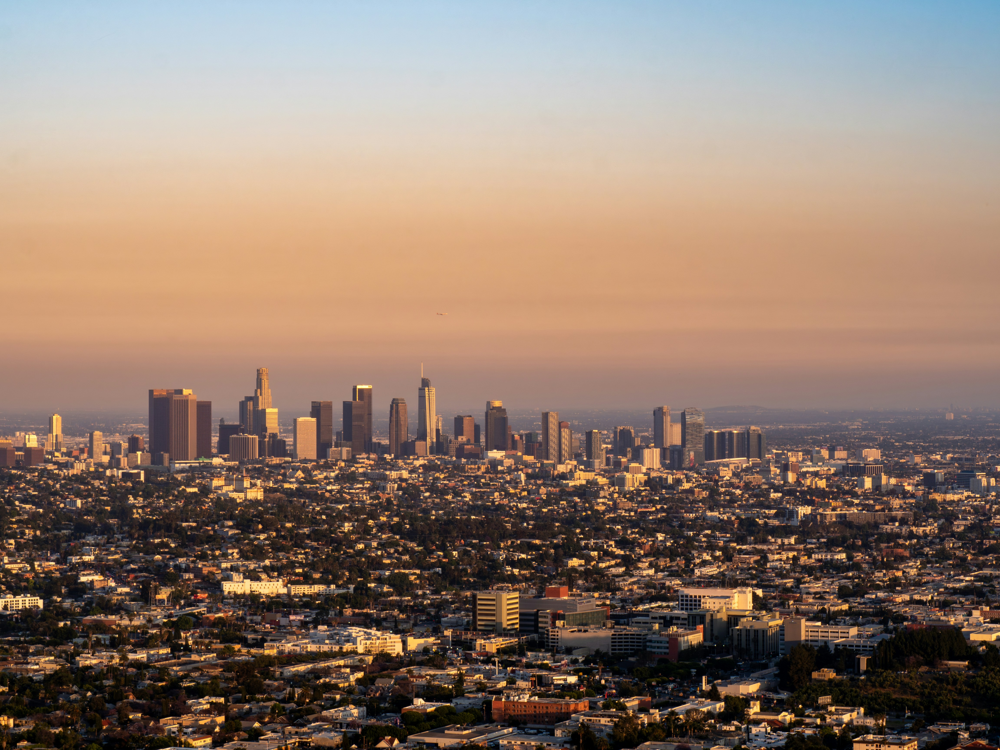

About Los Angeles
Los Angeles, California
Los Angeles (LA) is the most populous city in the U.S. state of California, and the commercial, financial, and cultural center of Southern California. With an estimated 3.87 million residents within the city limits as of 2025, it is the second-most populous city in the United States, behind New York City, and the largest city in the Western United States. The city has an ethnically and culturally diverse population, and is the principal city of a metropolitan area of 12.9 million people (2024). Greater Los Angeles, a combined statistical area that includes the Los Angeles and Riverside–San Bernardino metropolitan areas, is a sprawling metropolis of over 18 million residents. The majority of the city proper lies in the Los Angeles Basin adjacent to the Pacific Ocean in the west and extending partly through the Santa Monica Mountains and north into the San Fernando Valley, with the city bordering the San Gabriel Valley to its east. It covers about 469 square miles (1,210 km2), and is the county seat and most populated city of Los Angeles County, which is the most populous county in the United States with an estimated 9.86 million residents as of 2022. It is the third-most visited city in the U.S. (after New York City and Miami), with over 3.6 million visitors as of 2023.

Climate
Los Angeles has a two-season semi-arid climate with dry summers and mild to warm winters, but it receives more annual precipitation than most semi-arid climates, narrowly missing the boundary of a Mediterranean climate. Daytime temperatures are generally temperate all year round. In winter, they average around 68 °F (20 °C). Autumn months tend to be hot, with major heat waves a common occurrence in September and October, while the spring months tend to be cooler and experience more precipitation. Los Angeles has plenty of sunshine throughout the year, with an average of only 35 days with measurable precipitation annually. Due to the mountainous terrain of the surrounding region, the Los Angeles area contains a large number of distinct microclimates, causing extreme variations in temperature in close physical proximity to each other. The city, like much of the Southern Californian coast, is subject to a late spring/early summer weather phenomenon called "June Gloom". This involves overcast or foggy skies in the morning that yield to sun by early afternoon.
Brief History
The area that became Los Angeles was originally inhabited by the indigenous Tongva people and later claimed by Juan Rodríguez Cabrillo for Spain in 1542. The city was founded on September 4, 1781, under Spanish governor Felipe de Neve, on the village of Yaanga. It became a part of the First Mexican Empire in 1821 following the Mexican War of Independence. In 1848, at the end of the Mexican–American War, Los Angeles and the rest of California were purchased as part of the Treaty of Guadalupe Hidalgo and became part of the United States. Los Angeles was incorporated as a municipality on April 4, 1850, five months before California achieved statehood. The discovery of oil in the 1890s brought rapid growth to the city. The city was further expanded with the completion of the Los Angeles Aqueduct in 1913, which delivers water from Eastern California.
Why LA is Famous
Los Angeles (or “The Angels” in Spanish) is the cultural, financial and commercial center of Southern California. LA is also billed as the “creative capital of the world”, boasting the highest percentage of creative workers in the country – with more artists, writers, filmmakers, actors, dancers and musicians living and working in metro LA than any other city. Art and culture thrive in Los Angeles through the productions of film, performing arts, music, fashion, museums and even food.
Culture and Lifestyle
Diversity in Population and Neighborhoods
According to data in 2023 from the United States Census Bureau, Los Angeles's population is 47.2% Hispanic or Latino, 28.3% non-Hispanic White, 8.5% Black, 12.0% Asian, 1.2% Native American and 0.1% Pacific Islander. Ethnic enclaves like Chinatown, Historic Filipinotown, Koreatown, Little Armenia, Little Ethiopia, Tehrangeles, Little Tokyo, Little Bangladesh, and Thai Town provide examples of the multicultural character of Los Angeles. People of Mexican ancestry formed the largest national origin group, comprising 31.9% of the city's population. Descendants of Mexicans and Central Americans have long-established communities in Los Angeles and are spread throughout the entire metropolitan area. They are most heavily concentrated in regions around Downtown, such as East Los Angeles, Northeast Los Angeles and Westlake. Due to racial segregation that ended in the late 20th century, African Americans have been the predominant ethnic group in South Los Angeles, which has emerged as the largest African-American community in the western United States since the 1960s.
| Percent of LA Population By Race and Hispanic Origin |
| White |
33.4% |
| Asian |
12.1% |
| Black |
8.4% |
| American Indian and Alaska Native |
1.3% |
| Native Hawaiian and Pacific Islander |
0.2% |
| Two or More Races |
18.9% |
| Hispanic or Latino |
47.2% |
| White, Not Hispanic or Latino |
28.1% |
| Source: U.S. Census Bureau |
Entertainment, Music, and Art
For over a hundred years of moviemaking, LA’s studios have shot everything from legendary silent movies to the newest ground-breaking blockbuster. Exploring the city, you’ll recognize many iconic locations from both film and TV. Downtown LA’s Union Station, The Bradbury Building, Hollywood Roosevelt Hotel and Ennis House are just some of LA’s most famous filming landmarks. Music is an integral part of Los Angeles. LA boasts many world-class venues such as the Nokia Theatre or the Dolby Theatre, where the Oscars® are held each year. The show-stopping Walt Disney Concert Hall is an architectural experience and California’s perfect weather allows for concerts at the outside amphitheaters of the Hollywood Bowl, Greek Theatre and John Anson Ford Theatre. There are 841 museums and art galleries in the city of Los Angeles. That is more museums than any other city in the world.

Food Culture and Local Cuisine
Los Angeles has been called the ultimate food city because of its unique blend of cultures together with the stark contrasts between the most high-end gourmet cuisine and delicious street food. The ethnic food scene in LA is vast and covers every possible cuisine from across the globe. After Mexican food the next most predominant ethnic food in LA is Asian – Japanese, Korean, Chinese and Thai. Many fusion foods have been born from the combination of ethnic cuisines. However whereas fusion usually means gentrifying ethnic foods to suit the western palate in LA there is a true blending of foods. Try to catch one of LA’s food trucks for unique dishes made by enthusiastic up and coming chefs.
Outdoor Lifestyle
Southern California’s climate has often been described as “perfect” and with good reason. Most days are sunny and warm, with gentle ocean breezes in the summer. The humidity is low with little rain. In fact, there are no unpleasant seasons in Los Angeles. Los Angeles has plenty of outdoor activities to allow visitors to enjoy the sunshine. Los Angeles is home to Griffith Park, the largest city park in the country, with 400 square feet of recreational space and 50 miles of hiking trails that lead to some of the most spectacular views of the city and Hollywood Sign. Visitors can hike to the Griffith Observatory or even travel on horseback to experience the best sights. Runyon Canyon also offers great space for visitors to hike, bike and walk. The 106-acre park sits in the middle of Hollywood and offers several great hiking trails and a dog park.
Planning Your Visit
Best Times of Year to Visit LA
The best times to visit Los Angeles are from March to May and between September and November, when the air is more breathable and the crowds are less oppressive. Average temperatures during these months range from the low 50s to the low 80s, which makes walking around and visiting outdoor attractions much more comfortable. During the summer, average highs soar into the mid-80s; the heat coupled with heavy smog levels often drive visitors and residents alike to the already crowded oceanside neighborhoods.

Transportation
With over 431 miles of bikeways, including 120 new miles created within the city of Los Angeles in recent years, and increased Metro transit options that include the new K Line and upcoming Regional Connector Transit Project, it’s easier than ever to get around and experience Los Angeles car-free. Los Angeles is home to one of the country’s best public transportation networks, including subways, light-rail, buses and shuttles to nearly every corner of the Greater Los Angeles area. Visitors can also see LA without having to get behind the wheel with guided tour options such as Bikes and Hikes LA and Starline Tours Hop-On, Hop-Off tours.
Tips for First-Time Visitors
Get a travel pass to save money. There are lots of things to visit and do in LA, which means you’ll spend money on those activities. Getting a travel pass could ease the pain. Book ahead an airport pick up from LAX. Unless you plan to rent a car straight from the airport, this is the best way to get to your hotel from the airport. If you cannot drive, then your best bet is to go by tour or sightseeing tours or bus. While it might not be the most efficient way, it will still take you to all the places you’d want to see in LA. Take note of the opening time of the attractions you want to see since most do not have typical business hours. Be at the beach in the late afternoon for sunset to see some of the best sunsets of your life!
Budgeting and Costs
Planning a budget before visiting Los Angeles can help travelers make the most of their trip while avoiding unexpected expenses. Costs can vary widely depending on accommodations, dining choices, transportation, and the attractions you choose to visit. While many popular attractions charge admission, the city also offers numerous free or low-cost activities, including beaches, hiking trails, public parks, and cultural sites. Setting aside funds for parking, rideshare services, or public transportation is also recommended, as transportation expenses can add up quickly. With careful planning and a mix of paid and free experiences, visitors can enjoy Los Angeles regardless of their budget.